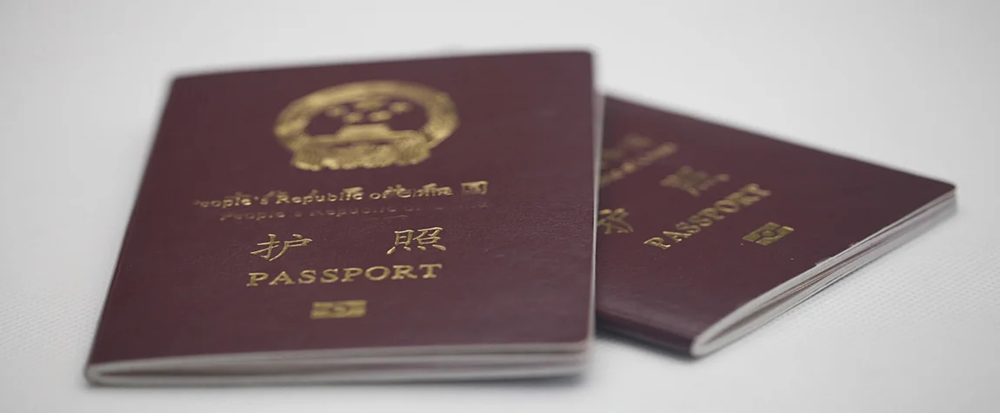

Planning a trip to Mainland China means getting a visa—and we know paperwork can feel overwhelming. But don’t worry! This guide breaks down how to apply for a Chinese tourist visa (L Visa) step by step, plus the latest policies for international visitors. No jargon, just clear, easy steps.
The L Visa is for people visiting Mainland China for tourism—like sightseeing, visiting friends (sometimes), or short trips. It’s usually valid for 3 months to 1 year, and you can stay for 30-90 days per visit (depending on what the consulate approves). Note: This visa is for Mainland China only—Hong Kong and Macao have their own entry rules (you may need a separate permit for Taiwan, but that’s for later trips!).

First, see if your country is on China’s “visa-free” list. Some countries (like Singapore, Japan, France, Germany) can stay in Mainland China for 144 hours (6 days) without a visa if they enter through certain ports (e.g., Beijing Capital Airport, Shanghai Pudong Airport) and leave to a third country (not your home country). But if you’re staying longer than 6 days, or entering through a different port, you’ll need a visa.
Check the website of the Chinese Embassy in your country to confirm—this saves you time!
You’ll need these items (make copies of everything—consulates often ask for duplicates):
Must be valid for at least 6 months after your planned departure from China, and have at least 2 blank pages.
Fill it out online (most embassies have a link) or get a paper form from the consulate. Be honest—don’t lie about your travel plans. Sign the form at the end!
1 recent color photo (48mm x 33mm, white background, no hats or glasses). The photo must be taken within the last 6 months—consulates reject old photos.
A simple plan of your trip—list your arrival/departure dates, cities you’ll visit, and hotels (you can book refundable hotels first, then cancel if needed). If you’re visiting a friend, ask them to send a letter of invitation with their address and ID number.
Some consulates ask for a bank statement (last 3 months) to show you have enough money for your trip (usually $500-$1000, depending on the length). Not all consulates require this, but it’s good to have just in case.
A copy of your round-trip flight tickets (again, refundable bookings work if you haven’t finalized your plans).
You can submit in person or by mail (check your embassy’s rules—some only accept in-person). Here’s what to do:
Submit to the Chinese Embassy or Consulate-General in your country (e.g., if you live in the US, there are consulates in New York, Los Angeles, Chicago).
Visa fees vary by country—for US citizens, it’s around $140; for EU citizens, around $60. You’ll pay when you submit (cash, credit card, or money order—ask ahead).
Standard processing takes 4-5 business days. If you need it faster (2-3 days), you can pay an expedited fee (usually double the standard cost).
Once approved, you’ll get your passport back with the visa inside. Check the details carefully:
If there’s a mistake, tell the consulate immediately—fixing it later is hard.
China has made it easier for tourists in recent years—here are the key updates:
Many consulates now issue 10-year multiple-entry visas for tourists from countries like the US, Canada, and Australia (stay up to 60 days per visit). This is great if you plan to visit again!
Online application forms are shorter, and some consulates accept digital photos.
The 144-hour visa-free transit policy is still active—just make sure you have a ticket to a third country (e.g., fly from London to Beijing, then to Seoul).
Double-check your list—forgotten photos or itineraries will delay your application.
Consulates check details (like hotel bookings), so be truthful.
Getting a Chinese visa is easier than it seems—just follow the steps, gather your documents, and take your time. Once you have that visa in your passport, you’re one step closer to exploring Mainland China’s wonders. If you have more questions, check your embassy’s website or contact me—happy planning!